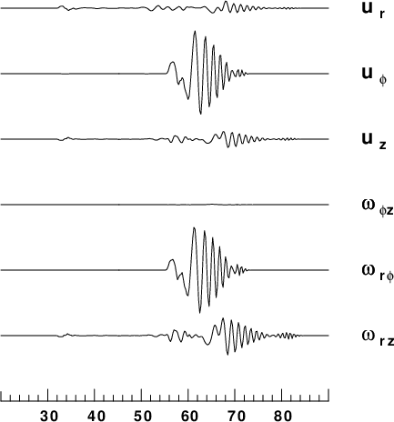
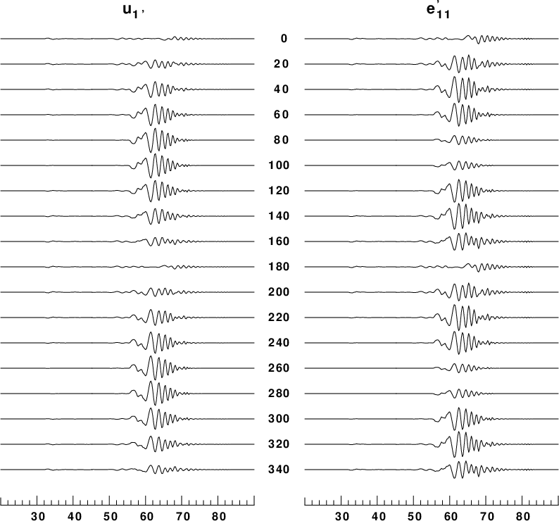

The example code is in the file CPSstrainexample.tgz. First you must compile a program that is not in the Computer Programs in Seismology distribution: psac. This is a utility for plotting Sac files. First define a SHELL variable CPS that points to the location of the Computer Programs in Seismology package, such as
export CPS='/Users/rbh/PROGRAMS.310t/PROGRAMS.330/'
Then to execute this test case, do the following:
gunzip -f CPSstrainexample.tgz | tar xvf - cd CPSstrain.example make psac DOIT DOCLEANUP
The result of these computations will be the PNG files shown below: F14_5.png and F14_6.png.
the script DOIT invokes the scripts DOITWK, DOSTRAIN, DOPLTF14_5 and DOPTLF14_6 to do the following:
| Comparison of ground velocities and rotations |
|---|
|  |
Comparison of ground velocities (maximum value is 1.8 x 10-7 m/s) and rotations (maximum value is 2.6 x 10-11). As expected from plane wave simulations the uφ velocity is similar to the ωφ rotation. Also the uz velocity is similar to the ωrz rotation. Plane wave theory show that the ratios are proportional to the phase velocity.
| Comparison u1 and e11 as a function of local orientation |
|---|
|  |
In this presentation, the velocity with maximum of 1.8 x 10 -7 m/s is in the left column and the strain with maximum value of 2.5 x 10-11 is on the right column. The local coordinate system is rotated through angles of 0° to 340° with respect to the radial direction form the source. Since the signal is a mixture of Love and Rayleigh waves, the presentation shows the different radiation patterns of each.